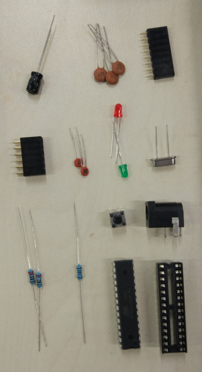
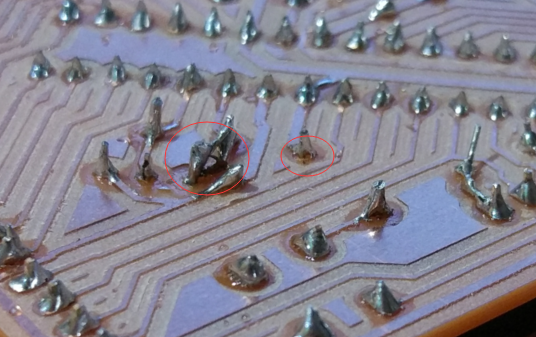
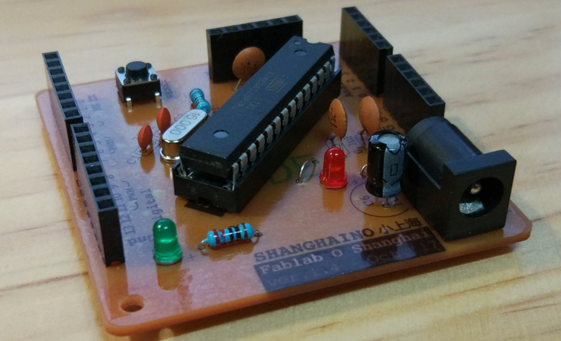

Doucments on the seventh week:
Well, as scheduled, the task is to solder the electric components onto the printed PCB. But first they are the list of the components:
- mirco controller: ATMEEA328 (× 1)
- socket (× 1)
- 16MHz crystal (× 1)
- capacitor
- 22uF (× 2)
- 0.1uF (× 3)
- 10uF (× 1)
- resistor
- 10kΩ (× 1)
- 220Ω (× 2)
- button for reset
- LED
- red (× 1)
- green (× 1)
- 8-pin female header (× 2)
- 6-pin female header (× 3)
- power connector (× 1)

After finding all the components, let's start soldering. Although I have soldered before, the "terrible" PCB still didn't make the soldering perfect. The holes that the milling machine drilled were not exactly in the middle of the copper. some of them are even going out of the boarder. Then, the tin didn't cover around all the pin.
And I have cut all the pins using the scissors, which ripped off only 2 solder joints luckily. Then I re-soldered it using the iron left from the pins.
And this is the final board coming out of my hands! :)
